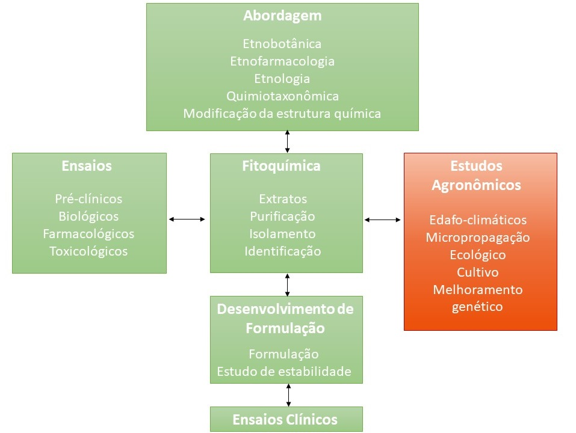
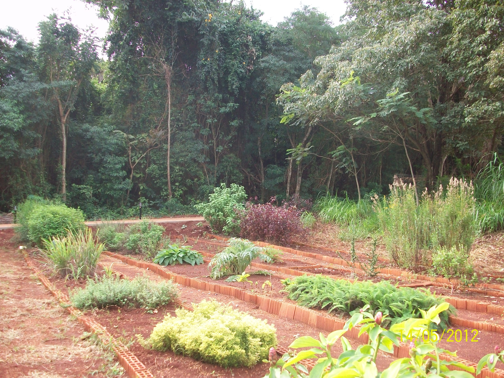

As concentrações dos metabólitos secundários podem variar de acordo com as condições climáticas e ambientais.
No entanto, quando desejamos produzir um medicamento de origem vegetal, faz-se necessário o cultivo da espécie vegetal em grande escala para garantir o fornecimento do insumo. Desta forma, os estudos agronômicos são fundamentais para garantir um insumo de boa qualidade e produzido dentro das Boas Práticas de Cultivo e Beneficiamento.
Os estudos agronômicos iniciam a partir dos resultados obtidos de estudos agroecológicos, como as características do ecossistema onde a planta medicinal nativa se desenvolve naturalmente ou do conhecimento tradicional, como as formas de cultivo. A partir destes levantamentos o agrônomo obtém informações acerca das caraterísticas edafo-clímáticas do habitat natural da espécie em estudo, que serão importantes para os estudos de micropropagação, de cultivo e de melhoramento genético.

A agroecologia fornecerá os princípios ecológicos para o estudo e o tratamento dos ecossistemas produtivos de recursos naturais como as plantas medicinais nativas, considerando-se o conhecimento tradicional, que sejam socialmente justos e economicamente viáveis considerando um agroecossistema sustentável e socialmente justo.
Os estudos agronômicos envolvem, a escolha das sementes, o cultivo, a colheita e o beneficiamento (triagem, secagem e armazenamento).
Estes estudos devem ser acompanhados pelo perfil fitoquímico dos extratos obtidos a partir das plantas cultivadas de forma a garantir a qualidade e a eficácia do produto.
Magalhães e colaboradores (2006) relatam os processos envolvidos na pesquisa agronômica. Clique aqui para ler o artigo "A Pesquisa Agronômica das Plantas Medicinais: um convênio com a natureza".
Refere-se características definidas através de fatores do meio tais como o clima, o relevo, a litologia, a temperatura, a humidade do ar, a radiação, o tipo de solo, o vento, a composição atmosférica e a precipitação pluvial.
Consiste na produção rápida de milhares de clones de uma planta, a partir de uma única célula vegetal somática ou de um pequeno pedaço de tecido vegetal.